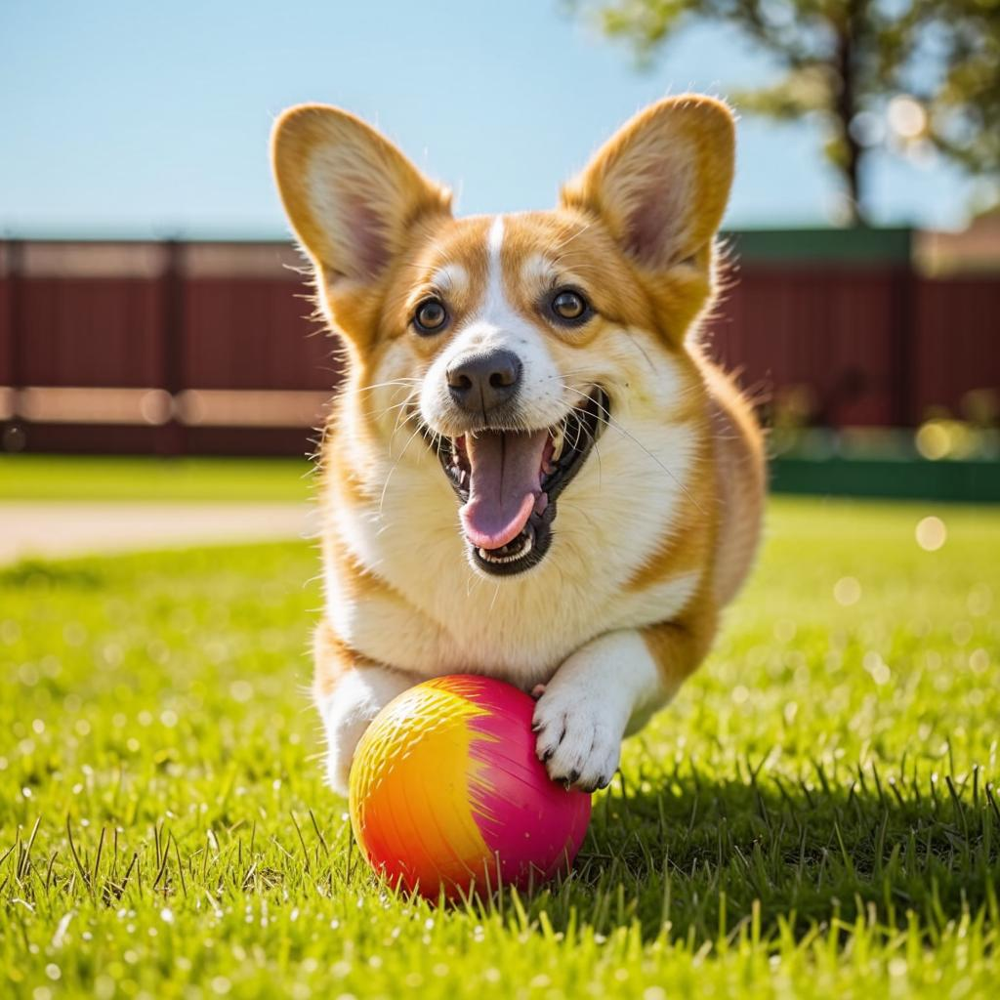
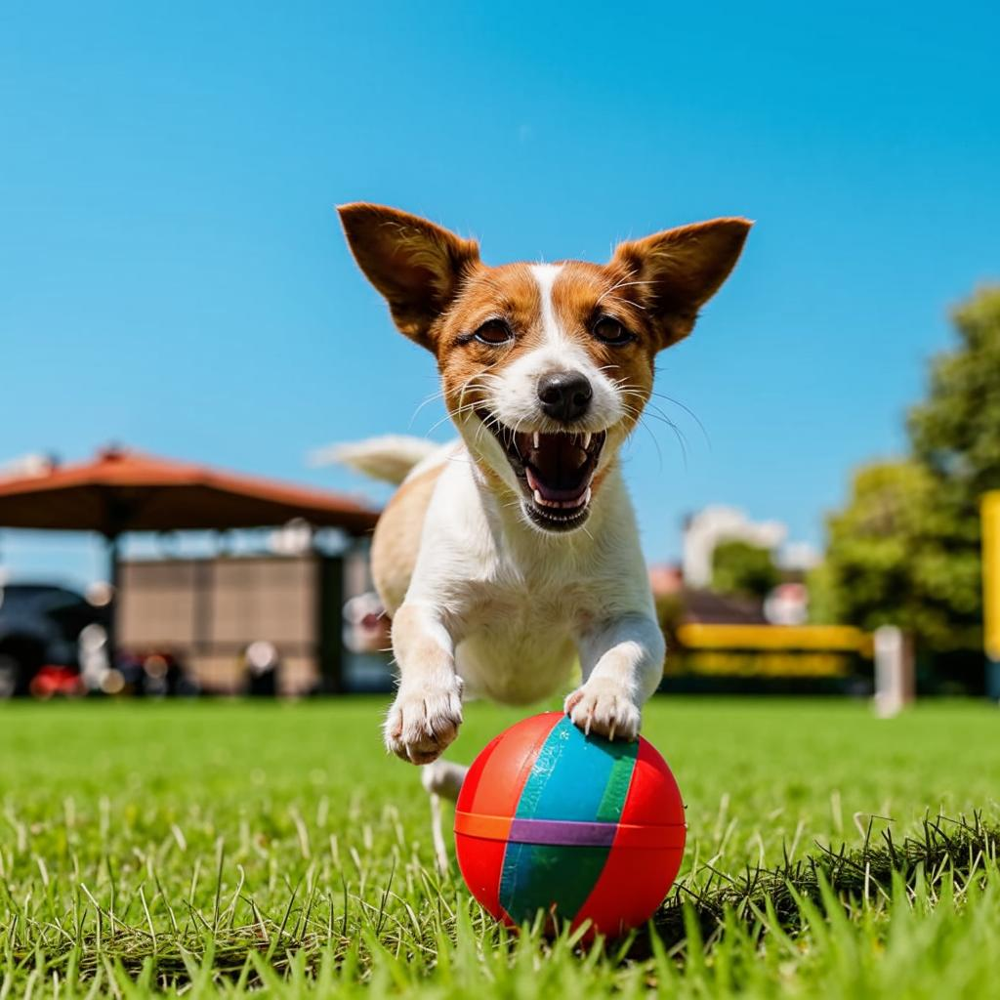

факт 1
В названии породы кроется место ее происхождения – Уэльс, Корги происходит от сочетания валлийских слов "карлик" (cor) и "собака" (gi). Что в переводе с уэльского означает "карликовая собака".

кардиган может иметь любой окрас из разрешённых для Пемброка: рыжий, триколор, соболь, а также редкие окрасы шерсти: тигровый и мраморный.".

Способны прыгнуть на высоту, которая в несколько раз превышает из собственный рост. Помните как в фильме "Маска" собака Майло запрыгнула на второй этаж ".